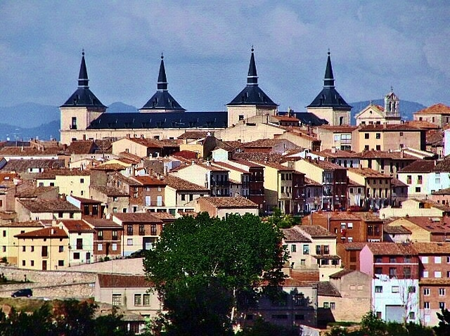
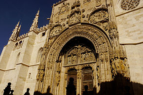
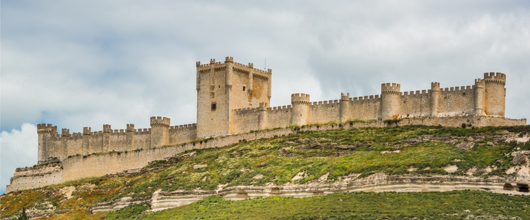
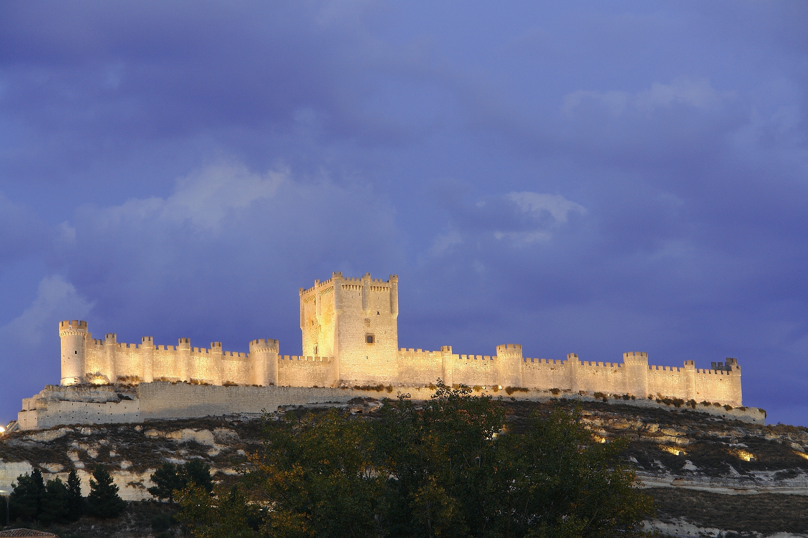
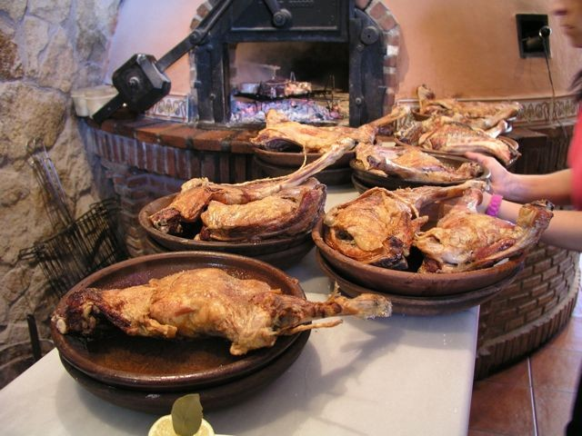
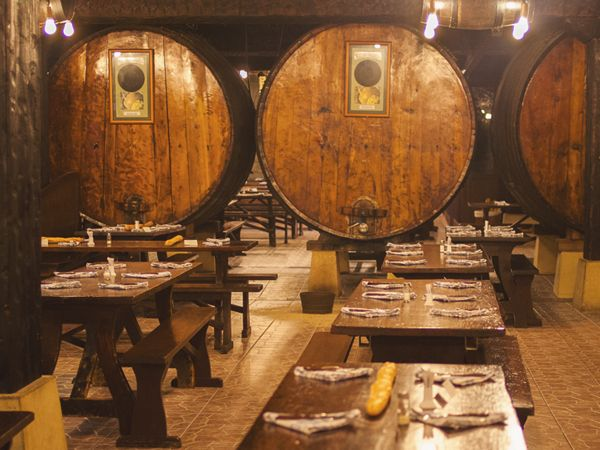
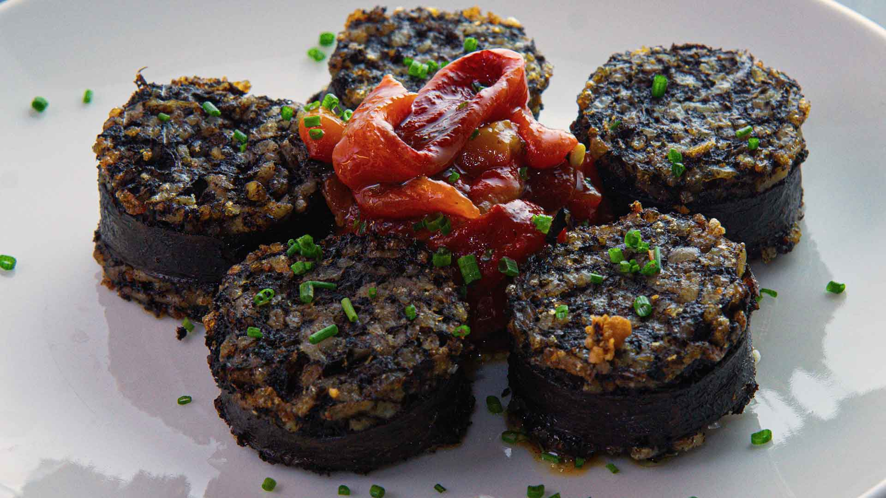
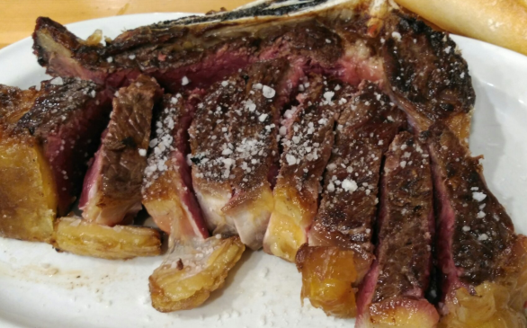
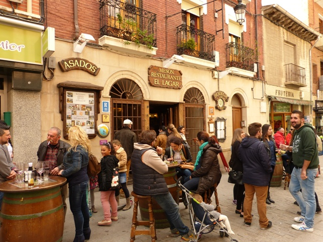

Escapade en petit groupe · 4 jours · Castille-et-León
Ribera del Duero · Vins d'exception
Aranda de Duero · Peñafiel · Lerma · Gormaz
Demander un devis gratuitUne histoire millénaire au cœur de l'Espagne
Plongez au cœur de la Ribera del Duero, l'une des régions viticoles les plus prestigieuses d'Espagne, avec Aranda de Duero comme point de départ. Découvrez des bodegas et dégustez les vins rouges emblématiques de la région, flânez dans des villes et villages historiques de Lerma à Peñafiel, explorez les caves souterraines d'Aranda et savourez une cuisine castillane généreuse.
Le voyage en un coup d'œil

🏛️ Lerma
- Cité ducale du XVIIe siècle
- Palais Ducal dominant la Plaza Mayor
- Architecture Renaissance
- Patrimoine historique exceptionnel

🍷 Aranda de Duero
- Capitale de la Ribera del Duero
- Caves souterraines du XVe siècle
- Patrimoine architectural remarquable
- Dégustations théâtralisées

🏰 Forteresse de Gormaz
- Construite vers 756 par l'émir Abd ar-Rahman Ier
- 390 mètres de long, 28 tours
- Plus grande forteresse musulmane d'Europe
- Vue panoramique sur la vallée

🏰 Château de Peñafiel
- Château du Xe siècle
- Musée provincial du vin
- Bodega Protos dans les entrailles
- Place du Coso depuis 1443

🍽️ Gastronomie castillane
- Lechazo (agneau de lait) au four à bois
- Morcilla de Burgos
- Côte de bœuf grillée
- Tapeo rue Isilla

🍏 Cidrerie basque
- Sagardoa, le cidre basque
- Rituel du txotx
- Menu traditionnel : morue, steak, fromage
- Ambiance conviviale à Astigarraga
Les vignes dorées de la Ribera
Le Tempranillo, cépage roi de la Ribera del Duero, représente 90% du vignoble. Pingus et Vega Sicilia portent haut les couleurs de l'appellation.
Votre itinéraire jour par jour
Jour 1 · Arrivée à Lerma
Route vers Lerma
Départ vers la Castille-et-León. Arrivée dans la cité ducale de Lerma, joyau de la Renaissance espagnole.
Déjeuner à Lerma
Déjeuner dans un restaurant typique de la région, au cœur de la Plaza Mayor dominée par le Palais Ducal.
Visite de la cité ducale
Lerma prend son essor au XVIIe siècle sous l'impulsion du duc Francisco Gómez de Sandoval y Rojas. Son Palais Ducal domine la Plaza Mayor. Découverte de l'architecture Renaissance et du patrimoine historique.
Arrivée à Aranda de Duero
Installation à l'hôtel en fin d'après-midi. Soirée libre pour une première découverte de la ville et de ses caves souterraines.
Jour 2 · Aranda & Gormaz
Vieille ville d'Aranda
Découverte du patrimoine architectural remarquable d'Aranda de Duero : église Santa María la Real, Plaza Mayor et réseau exceptionnel de caves souterraines.
Cave du XVe siècle
Visite d'une cave souterraine du XVe siècle, suivie d'une dégustation théâtralisée de Ribera del Duero, fromages et jambons locaux. Une immersion dans l'histoire viticole de la région.
Forteresse de Gormaz
Construite vers l'an 756 par l'émir Abd ar-Rahman Ier de Cordoue, la forteresse de Gormaz s'étire sur environ 390 mètres et conserve encore 28 tours. La plus grande forteresse musulmane d'Europe.
Dîner restaurant typique
Dîner dans un restaurant typique de la région : lechazo au four à bois, morcilla de Burgos et vins de la Ribera.
Jour 3 · Peñafiel & Ribera
Château de Peñafiel
Dans les entrailles du château se trouve un labyrinthe de galeries où le vin de la Bodega Protos est entreposé et conservé. La Place du Coso accueille des festivités depuis 1443.
Bodegas Protos
Visite et dégustation à la Bodega Protos, l'une des maisons emblématiques de la Ribera del Duero. Le Tempranillo, cépage roi, représente 90% du vignoble.
Circuit dans la Ribera
Découverte des villages viticoles : Pesquera, Valbuena, Quintanilla, Roa. Paysages de vignes à perte de vue et dégustations dans les bodegas.
Tapeo rue Isilla
Soirée tapas dans la célèbre rue Isilla d'Aranda de Duero, l'une des rues les plus animées pour le tapeo. Dégustation de spécialités locales accompagnées de vins de la Ribera.
Jour 4 · Cidrerie basque & retour
Départ d'Aranda
Départ en début de matinée pour une halte gourmande au Pays Basque.
Cidrerie à Astigarraga
Le cidre, ou sagardoa, appartient à l'histoire du Pays Basque. Dégustation de la sidra naturelle directement au tonneau selon le rituel du « txotx ». Menu traditionnel : omelette de morue, steak de bœuf, fromage de brebis et noix. Une touche conviviale et authentique pour clore l'escapade.
Route du retour
Route du retour avec les images de la Ribera del Duero en tête et le goût du Tempranillo sur les lèvres.
Le rituel du Txotx
À Astigarraga, on déguste la sidra naturelle directement au tonneau. Un rituel convivial et authentique, parfait point d'orgue avant le retour.
Gastronomie castillane
🍖 Lechazo
Agneau de lait cuit au four à bois. Le plat emblématique de la Castille, tendre et savoureux.

🩸 Morcilla de Burgos
Boudin noir traditionnel aux céréales, spécialité de Burgos. À déguster grillée ou en tapeo.

🥩 Côte de bœuf
Viande de qualité grillée sur la braise, accompagnée de piquillos et de vins de la Ribera.

🍷 Tapeo rue Isilla
La rue la plus animée d'Aranda pour le tapeo. Bars traditionnels et spécialités locales.
L'esprit du voyage
🍷 Vins d'exception
Ribera del Duero · Tempranillo · Bodegas Protos · Pingus · Vega Sicilia
🏛️ Patrimoine médiéval
Lerma · Aranda de Duero · Peñafiel · Forteresse de Gormaz
🍽️ Gastronomie castillane
Lechazo · Morcilla · Tapeo · Cidrerie basque
✨ La philosophie VPDVOYAGES
- Sélection : Des étapes qui ont du sens dans le rythme global
- Équilibre : Vins + patrimoine + gastronomie + villages
- Personnalisation : Le programme évolue selon vos envies
La Ribera del Duero, avec ses vignes dorées à l'infini, ses caves ancestrales et son art de vivre authentique, offre une échappée riche en saveurs et en émotions.
Votre itinéraire sur la carte
De Lerma à Astigarraga, en passant par Aranda de Duero, Gormaz et Peñafiel : cliquez sur chaque point doré pour découvrir les étapes de votre escapade.
Bon séjour en Ribera del Duero !
Vivez l'Espagne autrement… Escapade de 4 jours · Castille-et-León
Parlons de votre projet →